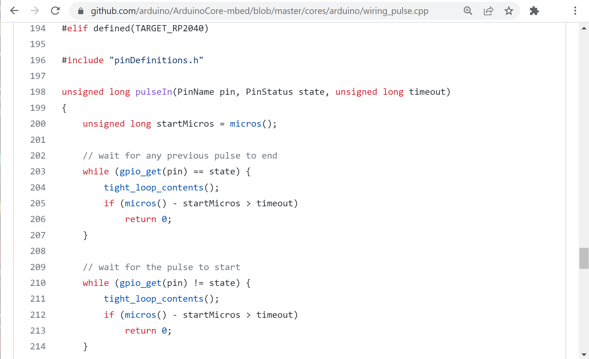

ARM Mbed OS for Raspberry Pi Pico RP2040: Code Examples (Part 5)#
เนื้อหาในส่วนนี้สาธิตการเขียนโค้ดโดยใช้ Mbed OS และ Arduino IDE สำหรับบอร์ดไมโครคอนโทรลเลอร์ที่ใช้ชิป RP2040 เช่น Raspberry Pi Pico โดยนำเสนอเป็น ตอนที่ 5 ต่อจาก ตอนที่ 1 | ตอนที่ 2 | ตอนที่ 3 | ตอนที่ 4
Keywords: Mbed OS, Raspberry Pi Pico, RP2040, Mbed-enabled Platforms, RTOS Programming
- การใช้งานโมดูล RGB LED แบบ Active-Low
- การใช้งานโมดูล WS2812B RGB LED (NeoPixel)
- การใช้งานโมดูล HC-SR04+ Ultrasonic Distance Sensor
- การใช้งาน Hardware Serial
▷ การใช้งานโมดูล RGB LED แบบ Active-Low#
โมดูล RGB LED สามารถให้แสงที่ประกอบด้วยสีแดง สีเขียว และสีน้ำเงิน ตัวอย่างของโมดูลที่ได้นำมาทดลองใช้งาน เป็นแบบ Active-Low มี 4 ขา ได้แก่ VCC (+3.3V), R (Red), B (Blue), G (Green) ตามลำดับ ดังนั้นขาควบคุมสถานะมี 3 ขา ถ้ามีลอจิกเป็น 0 จะทำให้ LED ที่ตรงกับขาดังกล่าวอยู่ในสถานะ ON (สว่าง) แต่ถ้าเป็นลอจิก 1 จะเป็น OFF (ดับ)
รูป: โมดูล RGB LED (Active-Low)
ถ้าเขียนโค้ดโดยใช้คำสั่งของ Arduino API เพื่อทำให้ LED แต่ละสี สว่างและดับขึ้นทีละดวง ก็ใช้คำสั่ง
pinMode(...) และ digitalWrite(...)
และเลือกใช้ขา GP13, GP12, GP11 ตามลำดับ
#include "mbed.h"
using namespace mbed;
const int RGB_PINS[] = {13,12,11}; // (R,G,B) pins
const size_t NUM_PINS = sizeof(RGB_PINS)/sizeof(int);
void setup() {
for ( int i=0; i < NUM_PINS; i++ ) {
pinMode( RGB_PINS[i], OUTPUT );
digitalWrite( RGB_PINS[i], HIGH ); // initial state: OFF
}
SerialUSB.begin( 115200 );
while (!SerialUSB){} // wait for Serial to open
delay( 1000 );
}
#define ROTATE_LFET_SHIFT(x,n) (((x<<1)|(x>>(n-1))) & ((1<<n)-1))
void loop() {
static uint8_t state = 0b011;
state = ROTATE_LFET_SHIFT(state,NUM_PINS);
for ( int i=0; i < NUM_PINS; i++ ) {
digitalWrite( RGB_PINS[i], (state >> i) & 1 );
}
delay( 1000 );
}
แต่ถ้าใช้คำสั่งของ Mbed Drivers ก็มีคลาส BusOut
ที่เหมาะสำหรับการใช้งานในกรณีนี้ (มี 3 ขา) เป็นการใช้งานขา GPIO แบบรวมกันหรืออาร์เรย์
ไม่จำเป็นต้องมีหมายเลขขาต่อเนื่องกัน แต่ใช้งานในทิศทางเอาต์พุตเหมือนกัน และสามารถเขียนใหม่ได้ดังนี้
#include "mbed.h"
using namespace mbed;
BusOut rgb(p13,p12,p11); // (R,G,B) pins
void setup() {
rgb = 0b111; // (R,G,B) initial state: OFF
SerialUSB.begin( 115200 );
while (!SerialUSB){}
delay( 1000 );
}
#define ROTATE_LFET_SHIFT(x,n) (((x<<1)|(x>>(n-1))) & ((1<<n)-1))
void loop() {
static uint8_t state = 0b011;
state = ROTATE_LFET_SHIFT(state,3); // update next state
rgb = state; // update output state
delay( 1000 );
}
รูป: การต่อวงจรทดลองบนเบรดบอร์ดสำหรับโมดูล RGB LED
▷ การใช้งานโมดูล WS2812B RGB LED (NeoPixel)#
ถัดไปเป็นการสาธิตการใช้ไลบรารีสำหรับโมดูล WS2812B หรืออีกชื่อหนึ่งคือ NeoPixel ของบริษัท Adafruit และทางบริษัทได้มีการพัฒนาไลบรารีให้สามารถนำไปใช้กับบอร์ดไมโครคอนโทรลเลอร์ เช่น AVR, nRF52, ESP8266/ESP32 เป็นต้น และได้มีการเพิ่มฟังก์ชันให้สามารถใช้งานได้กับบอร์ด Pico RP2040 โดยใช้ประโยชน์จากการทำงานของวงจรภายในที่เรียกว่า PIO
รูป: โมดูล WS2812 - NeoPixel (มุมมองด้านบน)
รูป: โมดูล WS2812 - NeoPixel (มุมมองด้านล่าง)
การติดตั้งและใช้งานไลบรารีใน Arduino IDE ก็มีขั้นตอนดังนี้
เปิดใช้งาน Arduino IDE และไปยังเมนู Tools > Manage Libraries
ในหน้าต่าง Library Manager ให้ค้นหาไลบรารีที่มีชื่อว่า adafruit_neopixel
คลิกเลือกที่รายการ "Adafruit NeoPixel" แล้วกดปุ่ม Install
รูป: การติดตั้งไลบรารี adafruit_neopixel สำหรับ Arduino IDE
ตัวอย่างโค้ดสาธิตการทำงานมีดังนี้ โดยเลือกใช้ขา GP15 บนบอร์ด Pico นำไปต่อกับขา DIN ของ โมดูล NeoPixel ที่มี RGB LEDs จำนวน 8 ดวง (พิกเซล) ซึ่งสามารถใช้แรงดันไฟเลี้ยง +3.3V ได้
โค้ดตัวอย่างนี้จะทำให้แต่ละดวงเปลี่ยนเป็นสีเขียว (Green) เพิ่มขึ้นทีละดวง จนครบ 8 ดวง แล้วดับลงตามลำดับในทิศทางตรงข้าม แล้วเกิดขึ้นซ้ำในลักษณะนี้ไปเรื่อย ๆ
// https://github.com/adafruit/Adafruit_NeoPixel
// support: AVR, NF52, ESP8266/ESP32, K210, RP2040
#include <Adafruit_NeoPixel.h>
#define PIN (15)
#define NUM_PIXELS (8)
Adafruit_NeoPixel pixels( NUM_PIXELS, PIN, NEO_GRB+NEO_KHZ800 );
void setup() {
SerialUSB.begin(115200);
while(!SerialUSB){}
pixels.begin(); // initialize NeoPixel
}
const uint32_t GREEN_COLOR = pixels.Color(0, 150, 0);
void loop() {
pixels.clear();
for( int i=0; i < 2*NUM_PIXELS; i++ ) { // for each pixel...
if (i < NUM_PIXELS) {
pixels.setPixelColor( i, GREEN_COLOR );
} else {
pixels.setPixelColor( 2*NUM_PIXELS-i-1, 0 /*OFF*/ );
}
pixels.show(); // Send the updated pixel colors to the hardware.
delay( 150 ); // Pause before next pass through loop
}
}
รูป: การต่อวงจรทดลองบนเบรดบอร์ดเพื่อใช้งานโมดูล NeoPixel RGB LED Bar
▷ การใช้งานโมดูล HC-SR04+ Ultrasonic Distance Sensor#
โมดูล HC-SR04+ เป็นตัวอย่างของเซ็นเซอร์ที่ใช้คลื่นเสียงที่มีความถี่สูง (เช่น 40kHz หรือมากกว่า) ในการตรวจจับวัตถุกีดขวาง เมื่อส่งสัญญาณเสียงจากตัวส่งแล้วไปกระทบกับวัตถุ จะได้เสียงสะท้อนกลับมายังตัวรับสัญญาณ ถ้าจับเวลาตั้งแต่ส่งคลื่นเสียงออกไปและได้รับคลื่นสะท้อนกลับมา ก็สามารถคำนวณระยะห่างจากวัตถุดังกล่าวได้
รูป: โมดูล HC-SR04+ Ultrasonic Distance Sensor
โมดูล HC-SR04+ สามารถใช้แรงดันไฟเลี้ยง +3.3V มีขาอินพุต TRIG ไว้สร้างสัญญาณพัลส์เพื่อเริ่มต้นการวัดระยะห่าง และมีขาเอาต์พุต ECHO เป็นสัญญาณพัลส์แบบ High
ความกว้างของพัลส์ (Pulse Width) ที่วัดได้ หรือค่า มีความสัมพันธ์แบบเชิงเส้นกับระยะห่างจากวัตถุ (Distance) ตามสูตรต่อไปนี้ (ถ้ากำหนดให้ความเร็วของคลื่นเสียงในอากาศเท่ากับ 343 m/s โดยประมาณ)
ตัวอย่างการเขียนโค้ดโดยใช้คำสั่งของ Arduino มีดังนี้
// speed of sound in the air at sea level
#define SOUND_SPEED (340) // ~340 m/s
#define TRIG_PIN (p15)
#define ECHO_PIN (p14)
void setup() {
SerialUSB.begin( 115200 );
while(!SerialUSB){}
pinMode( ECHO_PIN, INPUT_PULLUP );
pinMode( TRIG_PIN, OUTPUT );
digitalWrite( TRIG_PIN, LOW );
}
bool measure( float *distance ) {
uint32_t countdown;
// generate a high pulse on TRIG pin
digitalWrite( TRIG_PIN, HIGH );
delayMicroseconds(20);
digitalWrite( TRIG_PIN, LOW );
countdown = 100;
// wait until the ECHO pin goes high
while ( digitalRead(ECHO_PIN) == LOW ){
if ( countdown == 0 ) return false;
countdown--;
delayMicroseconds(1);
}
uint32_t t_start = micros();
countdown = 20000;
// wait until the ECHO pin goes low
while ( digitalRead(ECHO_PIN) == HIGH ) {
if ( countdown == 0 ) return false;
countdown--;
delayMicroseconds(1);
}
uint32_t t_end = micros();
// calculate the pulse width
uint32_t t_pulse = t_end - t_start;
// calculate the distance (in cm.)
*distance = SOUND_SPEED*t_pulse/2.0/10000;
return true;
}
char sbuf[32];
void loop() {
float distance;
if ( measure( &distance ) ) {
sprintf( sbuf, "Distance: %.1f cm", distance );
SerialUSB.println( sbuf );
} else {
SerialUSB.println( "Timeout" );
}
delay( 500 );
}
คำสั่ง pulseIn() ของ Arduino Core for Mbed เป็นฟังก์ชันที่ถูกสร้างไว้ในไฟล์
cores/arduino/wiring_pulse.cpp.c

รูป: โค้ดในส่วนที่เกี่ยวข้องกับการทำงานของฟังก์ชัน pulseIn()
ถ้าจะเปลี่ยนมาใช้คำสั่ง pulseIn() ก็มีตัวอย่างดังนี้
// speed of sound in the air at sea level
#define SOUND_SPEED (340) // ~340 m/s
#define TRIG_PIN (p15)
#define ECHO_PIN (p14)
void setup() {
SerialUSB.begin( 115200 );
while(!SerialUSB){}
pinMode( ECHO_PIN, INPUT_PULLUP );
pinMode( TRIG_PIN, OUTPUT );
digitalWrite( TRIG_PIN, LOW );
}
bool measure( float *distance ) {
uint32_t t_pulse;
// generate a high pulse on TRIG pin
digitalWrite( TRIG_PIN, HIGH );
delayMicroseconds(20);
digitalWrite( TRIG_PIN, LOW );
// measure the HIGH pulse width of the echo signal
t_pulse = pulseIn( ECHO_PIN, HIGH );
// calculate the distance (in cm.)
*distance = SOUND_SPEED*t_pulse/2.0/10000;
return (t_pulse > 0);
}
char sbuf[32];
void loop() {
float distance;
if ( measure( &distance ) ) {
sprintf( sbuf, "Distance: %.1f cm", distance );
SerialUSB.println( sbuf );
} else {
SerialUSB.println( "Timeout" );
}
delay( 500 );
}
ตัวอย่างการเขียนโค้ดโดยใช้ Mbed Drivers มีดังนี้
#include "mbed.h"
using namespace mbed;
// speed of sound in the air at sea level
#define SOUND_SPEED (340) // ~340 m/s
DigitalOut trig(p15);
DigitalIn echo(p14);
void setup() {
SerialUSB.begin( 115200 );
while(!SerialUSB){}
echo.mode( PullUp );
trig = 0;
}
bool measure( float *distance ) {
uint32_t countdown;
// generate a high pulse on TRIG pin
trig = 1;
wait_us(20);
trig = 0;
countdown = 100;
// wait until the ECHO pin goes high
while ( echo == 0 ){
if ( countdown == 0 ) return false;
countdown--;
wait_us(1);
}
uint32_t t_start = micros();
countdown = 20000;
// wait until the ECHO pin goes low
while ( echo == 1 ) {
if ( countdown == 0 ) return false;
countdown--;
wait_us(1);
}
uint32_t t_end = micros();
// calculate the pulse width
uint32_t t_pulse = t_end - t_start;
// calculate the distance (in cm.)
*distance = SOUND_SPEED*t_pulse/2.0/10000;
return true;
}
char sbuf[32];
void loop() {
float distance;
if ( measure( &distance ) ) {
sprintf( sbuf, "Distance: %.1f cm", distance );
SerialUSB.println( sbuf );
} else {
SerialUSB.println( "Timeout" );
}
delay( 500 );
}
รูปแบบการเชื่อมต่อระหว่างโมดูล HC-SR04+ กับบอร์ด Pico มีดังนี้
Pico HC-SR04+
GND ---- GND
GP14 <--- Echo
GP15 ---> Trig
3.3V ---- VCC
รูป: การต่อวงจรใช้งานโมดูล HC-SR04+ ร่วมกับบอร์ด Pico
รูป: การจำลองการทำงานของโค้ดตัวอย่างโดยใช้ Wokwi Simulator
▷ การใช้งาน Hardware Serial#
วงจรภายในไมโครคอนโทรลเลอร์ที่เรียกว่า UART (Universally Asynchronous Receiver / Transmitter) ใช้วิธีรับส่งข้อมูลทีละบิตแบบสองทิศทางและไม่มีการสร้างสัญญาณ Clock เป็นสัญญาณควบคุม และเลือกรูปแบบการใช้งานขา I/O ที่เกี่ยวข้องให้เป็นขา TX/RX (Transmit Data / Receive Data)
การใช้งาน Serial ของบอร์ด Pico โดยใช้ Arduino API มีตัวเลือกดังนี้
SerialหรือSerialUSBใช้วิธีการสื่อสารผ่าน Native (built-in) USB โดยตรงSerial1เป็นการใช้งานวงจร UART0 ที่มีอยู่ภายในชิป RP2040 และใช้ขา GP0 / GP1 สำหรับขา TX / RX ของ UART0 ตามลำดับ
ตัวอย่างแรกสาธิตการเขียนโค้ดเพื่อรอรับข้อมูลจากคอมพิวเตอร์ของผู้ใช้ผ่านทาง SerialUSB
เมื่อได้รับข้อมูลไบต์หนึ่งไบต์ ก็ส่งออกทาง Serial1 แต่ถ้ามีข้อมูลรับเข้ามาทาง Serial1
ให้รับข้อมูลแล้วส่งต่อออกทาง SerialUSB ในทางกลับกัน
ดังนั้น Pico ในตัวอย่างนี้ จึงทำงานเป็นตัวส่งต่อข้อมูลระหว่าง SerialUSB กับ Serial1 ในทั้งสองทิศทาง
ในการทดลองกับฮาร์ดแวร์จริง ให้เชื่อมต่อขา GP0 ไปยัง GP1 (ขา TX เชื่อมต่อไปยัง RX)
ด้วยสายไฟหนึ่งเส้น เพื่อใช้งานในลักษณะ Serial Loopback
void setup() {
SerialUSB.begin( 115200 );
while (!SerialUSB){} // wait for SerialUSB to open
Serial1.begin( 115200 );
}
char data;
void loop() {
// read from SerialUSB, write to Serial1
while ( SerialUSB.available() > 0 ) {
data = SerialUSB.read();
Serial1.write( data );
}
// read from Serial1, write to SerialUSB
while ( Serial1.available() > 0 ) {
data = Serial1.read();
SerialUSB.write( data );
}
}
หรือถ้าจะเขียนโค้ดโดยการแบ่งการทำงานเป็น 2 ส่วนย่อยที่ทำงานได้พร้อม ๆ กัน ให้รับและส่งข้อมูลในแต่ละทิศทาง โดยใช้ Mbed Threads ก็มีตัวอย่างดังนี้
#include "mbed.h"
using namespace mbed;
using namespace rtos;
Thread t1, t2; // create two threads
void from_serialusb_to_serial1() { // for the first thread
while (1) {
// read from SerialUSB and write to Serial1
while ( SerialUSB.available() > 0 ) {
Serial1.write( SerialUSB.read() );
}
yield(); // pass control to other threads
}
}
void from_serial1_to_serialusb() { // for the second thread
while (1) {
// read from Serial1 and write to SerialUSB
while ( Serial1.available() > 0 ) {
SerialUSB.write( Serial1.read() );
}
yield(); // pass control to other threads
}
}
void setup() {
SerialUSB.begin( 115200 );
while (!SerialUSB){} // wait for SerialUSB to open
Serial1.begin( 115200 );
// start both threads to handle serial streams
t1.start( &from_serialusb_to_serial1 );
t2.start( &from_serial1_to_serialusb );
}
void loop() {}
วงจร UART (หรืออาจเรียกว่า Serial) ของไมโครคอนโทรลเลอร์ ไม่สามารถสื่อสารข้อมูลได้โดยตรงกับคอมพิวเตอร์ของผู้ใช้ ดังนั้นจึงต้องใช้โมดูล USB-to-Serial ในการเชื่อมต่อ ถ้าจะส่งข้อมูลไปยังคอมพิวเตอร์โดยไม่ใช้วงจร USB ของ Pico ตัวอย่างถัดไปเป็นการใช้โมดูล USB-to-Serial เพื่อส่งข้อมูลจาก ** Pico** ไปยังคอมพิวเตอร์ของผู้ใช้
void setup() {
// use Serial1 (UART0)
// Arduino default pins: Tx/Rx = GP0/GP1
Serial1.begin( 115200 );
}
char sbuf[32];
void loop() {
static uint32_t cnt = 0;
sprintf( sbuf, "Count: %lu", cnt++ );
Serial1.println( sbuf );
delay( 500 );
}
หรืออาจเขียนโค้ดใหม่ที่ให้ผลเหมือนกัน โดยใช้คำสั่ง printf() ของ
Mbed OS ซึ่งจะตรงกับ UART0 (ใช้ขา GP0 / GP1) ของบอร์ด Pico
void setup() {
// empty
}
char sbuf[32];
void loop() {
static uint32_t cnt = 0;
sprintf( sbuf, "Count: %lu\n", cnt++ );
std::printf( sbuf ); // send string to serial
delay( 500 );
}
แต่ถ้าจะเปลี่ยนมาใช้ Mbed OS Drivers แทน Serial1
ก็มีคลาสให้ใช้งาน เช่น UnbufferedSerial ตามตัวอย่างโค้ดต่อไปนี้
#include "mbed.h"
using namespace mbed;
#define TX_PIN (p0)
#define RX_PIN (p1)
UnbufferedSerial serial( TX_PIN, RX_PIN, 115200 );
void setup() {
// 8-bit data, no parity bit, 1 stop bit
serial.format( 8, SerialBase::None, 1 );
}
char sbuf[32];
void loop() {
static uint32_t cnt = 0;
while (!serial.writable()) {}
sprintf( sbuf, "Count: %lu\n", cnt++ );
serial.write( sbuf, strlen(sbuf) ); // send string
serial.sync(); // flush output
delay( 500 );
}
การต่อวงจรใช้งานโมดูล USB-to-Serial (เช่น โมดูลที่ใช้ไอซี CP2102 หรือ CP2104) จะใช้เพียง 3 ขา คือ GND, TXD, RXD โดยใช้แรงดันไฟเลี้ยง +5V จากพอร์ต USB ของคอมพิวเตอร์ (แต่ขา TXD / RXD ทำงานที่ระดับแรงดันสำหรับลอจิกที่ +3.3V)
รูปแบบการเชื่อมต่อมีดังนี้
Pico USB-to-Serial module
GND ---- GND
GP0/TX ---> TXD
GP1/RX <--- RXD
รูป: การต่อวงจรทดลองใช้งานร่วมกับโมดูล CP2104 USB-to-Serial
This work is licensed under a Creative Commons Attribution-ShareAlike 4.0 International License.
Created: 2021-12-16 | Last Updated: 2022-03-03